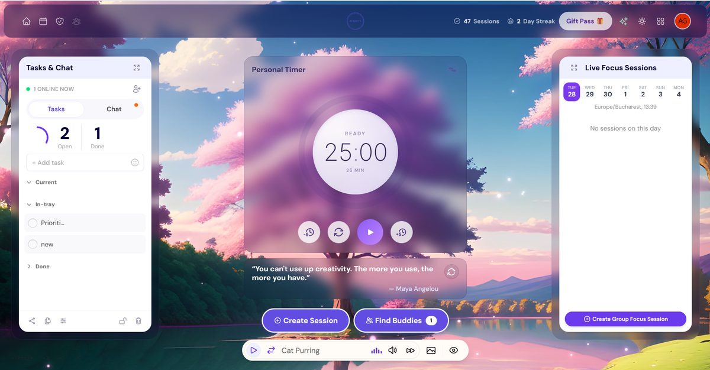
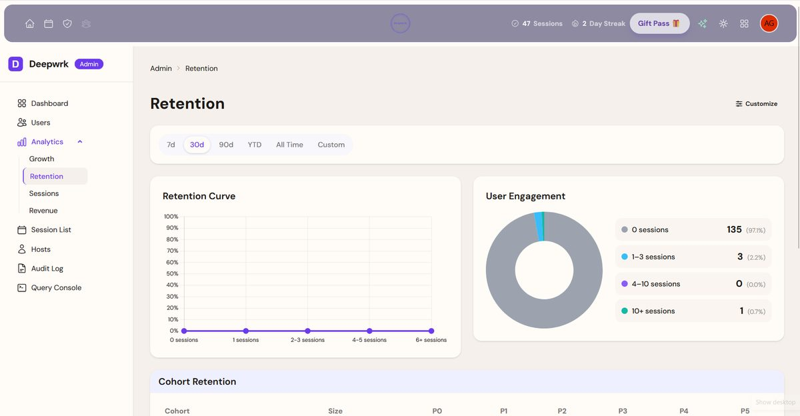
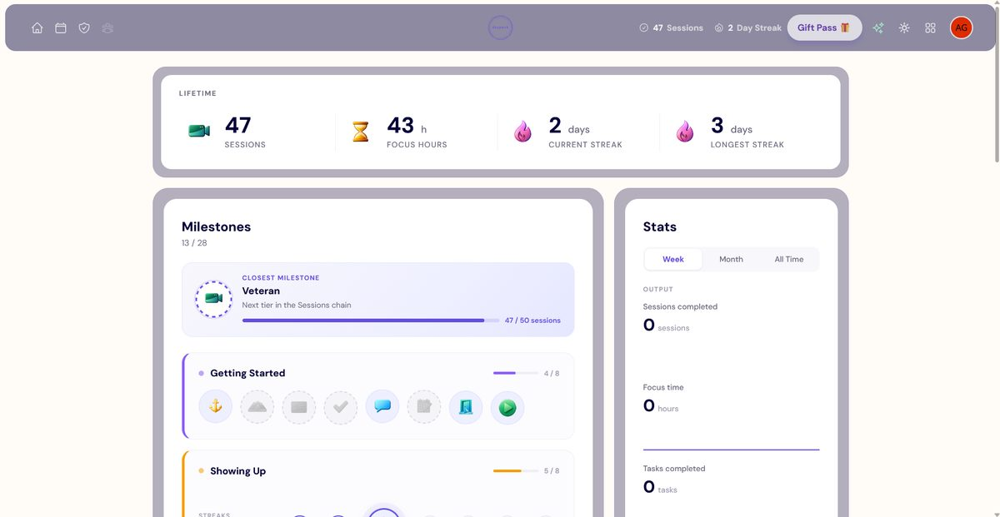

DeepWrk
Virtual body-doubling platform for adults with ADHD — facilitated video focus sessions, a 24/7 co-working room, real-time chat, gamification, and Stripe billing. Built from scratch for the founder after the Bubble.io version hit its performance and maintainability ceiling. Solo developer: architecture, backend, frontend, real-time, payments, deployment.
Visit staging site ↗ (opens in new tab)Why It Was Rebuilt
The original Bubble.io implementation made early development fast, but by the time the platform had real users, two problems were getting worse.
Performance: Bubble's runtime adds abstraction on top of every database call. Page loads were hitting 3–8 seconds. Real-time features — live session counts, chat — had 2–4 second delays. For a product whose entire value proposition is getting into flow state, that's fatal.
Maintainability: Every new feature required working around Bubble's constraints. What should have been a two-hour feature took two days. The codebase was accumulating workarounds faster than features.
Performance: Bubble vs ASP.NET MVC
| Metric | Bubble.io (before) | ASP.NET MVC (after) |
|---|---|---|
| Initial page load | 3 – 8s | < 1s |
| Live session count update | 2 – 4s delay | Real-time |
| Chat message delivery | 1 – 3s | < 100ms |
| Auth flow | 4 – 6s | < 500ms |
| New feature iteration | Days (workarounds) | Hours (direct) |
| Hosting cost at scale | $450/mo | ~$150/mo (projected) |
Measured on warm server. Render free tier may cold-start in 5–10s on first visit.
What I Built



Technical Challenges
LiveKit Self-Hosting
DigitalOcean droplet running LiveKit via Docker Compose. Token generation, room lifecycle management, and moderation (mute, kick) via the LiveKit server API.
Concurrent Real-Time Hubs
Each hub manages its own connection lifecycle, presence tracking, and message routing. The hard part: shared infrastructure patterns but fully independent state, with graceful degradation when connections drop mid-session.
Stripe Webhook Lifecycle
Full subscription state machine: creation, trial, active, cancelled, expired. Webhook idempotency, billing portal integration, plan upgrades and downgrades.
Data Migration from Bubble
No SQL export. Custom extraction scripts to pull data out of Bubble's proprietary format, schema mapping, zero data loss across 200+ accounts and all their history.
Architecture
Server-rendered MVC — no SPA framework. TypeScript only for LiveKit, SignalR connections, and interactive controls. The complexity is in the real-time coordination and the business logic, not the rendering layer.